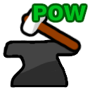
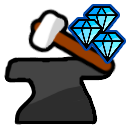

Money per Click {{formatNumber(getMPC(), 2, 1e12, 2)}} $
Money/s {{formatNumber(getMPS(), 2, 1e12, 2)}} $
Avg. Gems/s
{{formatNumber(getGPS(), 2, 1e12, 3)}}
Avg. Planet Coins/s
{{formatNumber(getPCPS(), 2, 1e12, 3)}}
{{m.message}}
You have {{formatNumber(wisdom, 2, 1e12, 0)}}
With wisdom, you are able to become smart enough to become stronger with every click! Get smart in all areas of mining to get to heights
no one has thought of yet.
Settings
Change the Number Format of the Game, Save manually or export and import your Game.
Number Format Theme
Note: The Game won't save if cookies and browser storage are disabled. Clearing cookies and browser data might erase
your savegame.
Thanks to crovie, the creator of Idle Mine
for making this interesting Game concept.
So you have decided to start with mining. You have heard that many treasures lie down below the surface, so you
can't wait to find out what you can find. Maybe you can become rich?
There's you, and your Auto-Mining-Device. Let's get started!
This also acts as s sort of guide. If something is unclear, look into here as a reference.
You mined your first piece of Mud! Well, it's not worth a lot, but you've got to start somewhere.
Just some ordinary Mud
Even 2 $ can be a good start. Maybe you should try to mine something more precious?
You take your Pickaxe and proceed to hit some old homework with it (You didn't need it anymore, anyways).
Paper (Your old Homework)
For some reason it was worth a whopping 10 $! It seems like you've got the hang of it. Unfortunately, you also find out
that it was kind of resistent to your pickaxe, so you need to craft a better one to keep growing. Luckily you have this rusty
Blacksmith at home (for whatever reason). It doesnt look good enough though. You should try to Upgrade it.
How do I get Gems?
Every time you mine something, there is a chance that you will be awarded a Gem, used to craft Pickaxes.
Stats, Stats, Stats...
Some general Tips: Every Mineral has defense, which is an absolute reduction to click and idle damage.
To find out what's the most efficient to mine, look at where Money/s and Money per Click are the highest.
More gems/s mean that you can get gems faster to craft new Pickaxes. The base Damage of a pickaxe is calculated
by multiplying its power with the quality (for example: 1,000 * 150% = 1,500). After that, Active and Idle Power
Upgrades are applied.
Just a little improvement to your Blacksmith makes it seem much stronger!
Blacksmith Power!
You should try to craft a new Pickaxe. You only need one Gem to do it! Luckily you have a few of them at home. You don't
remember when you got them, they are just here for some reason. After crafting, you should try your luck with salt.
When should I craft?
The power and quality of a pickaxe is based on Blacksmith Upgrades. The resulting power and quality will be random,
but will at least be as much as the minimum power and quality.
You take out all the salt from your kitchen drawer, and start to hammer on it with your newly crafted Pickaxe. It works
surpisingly well, you think.
Salt (from your Kitchen Drawer)
22 $! That is sure a lot. You could buy some Games from it, or you take it serious and invest the money into your blacksmith.
You go to a nearby lake and dig out some clay.
Clay (fresh from the Lake)
It's already worth 50 $! That's much more than salt. Of course it was tougher, but the reward speaks for itself.
There's a Cave nearby. This is where the real adventure will start. Maybe you should improve your blacksmith a bit more and get a
new Pickaxe before proceeding.
Of course, the first thing you see when entering the cave is Stone and Rocks. And there is sure a lot of it. There is so much to be mined...
Rock (from the cave entrance)
120 $! Not bad at all. You see a big growth coming. Venture deeper into the Cave and mine better and better stuff. Don't forget
to buy Upgrades and craft new Pickaxes
Offline Income
For up to 6 hours, you can earn 50 % of your Money per second offline. You have to be offline for at least 5 minutes
to be eligible of earning offline money.
I Gotta be rich!
Ten Thousand dollars! That's surely more than your average wage. I think you are far enough to pay your living with it.
But also, improving your mining technology is very expensive, but it will pay off very fast.
You have mined new Stuff along the way like Coal, Lead and Copper. You are starting to venture deeper into the cave.
To be honest, this might be just the start. Great treasures await!
You have already went down a good bit into the mine. Stuff is getting precious down there. The first abnormal minerals are appearing
Ohhhh, Spooky!
{{formatThousands(14000)}} $ for a bunch of Bones? Well, they are spooky! Even though you don't know why exactly they are...
There are multiple ways to earn a million: Winning at a quiz show, having a certain job, or, mining precious materials?
Anyways, you've just reached a Million!
Rich. For real now.
The journey doesn't end here! Why not get even richer? The cave is seemingly endless.
Precious stuff is appearing now. You are starting to see typical Gemstones: Sapphire, Ruby and Emerald. You don't know how deep
you are, but this cave is the biggest you've ever seen. It just never ends and seems to get bigger the deeper you are.
Precious, and worth Millions
Are we reaching the end? Definitely not!
You earn Gems more easily now, so you got an Idea: if you invest multiple Gems into a Pickaxe, it should be even better.
Now you can also use 3 Gems to craft a Pickaxe, but they turn out to be much better.
Not a waste at all!
You don't know what it is. It has never been discovered before. You are probably the first who has gone so far.
What is this?
Just about 20 of these will make you the worlds richest person. Maybe the money could also be used to study and research on
this mysterious material.
Along the way, you discover more unknown and ultra precious things that have yet to be studied.
There it is. Another type of essence. This time it seems to be fiery and very hot. Sadly you don't have a thermometer with you.
HOT, HOT!
Now, you need only one to become the richest person on the world. Alternatively, you could also give every person on the world
about 25 $. That would be enough for some food.
I don't know either
This thing is so precious that there isn't even a name for it, so let's just call it "Mysterium", because it
is a mystery, after all. It will be forever mysterious and the mystery will never be solved. How mysterious is that?
That sure is a lot of Money. Maybe it is enough to buy the Moon?
Richer than Rich
This is enough to pay off the US National debt.
Yet another Essence found. This one glows a lot and is even bright, so bright that a few of them could light up
an entire city.
Enlighten!
You still have no idea where the end is, you look down into a colorful cluster of minerals, shining in many
different colors. You feel like that will change soon.
After passing several huge mineral clusters, and feeling like going down for many kilometers, you start to
feel the heat of the air down here. It is still very bearable, though. A few dozen meters later, a sudden change
happens.
Is this hell?
These Minerals are completely different. They are very hot, dont glow at all and don't look beautiful either.
On the other hand, they are worth a ton of money and you feel like you've hit the end. But did you?
The End?
The Hellstone is getting darker and darker, harder and harder to break; an end seems to be near.
Suddenly, the cave ends. The ground is filled with even more demonic Hellstone. They are nearly pitch black and seem unbreakable.
You need a very good Pickaxe now.
Unbreakable? I doubt that!
Let's get a good Pickaxe, mine this and find out more! Maybe we did it?
After breaking the last hellstone, a small hole opens up below it. You didn't reach the end of the wave.
There was just that wall of Hellstone...
To Infinity. And beyond!
By now you have probably accepted that this cave is endless and will never end, which in return means that
you will become so rich that nobody can believe it.
It is really crazy down here. Those minerals don't even fit into the real world anymore. This just feels like
another realm. You notice that progressing seems to get harder and harder...
Suddenly you see light at the end of the Tunnel. A huge Gem. A really huge Gem. Breaking it would give you
insights you couldn't think of before. Something to speed of progress a lot.
It's not just a Gem!
You instantly feel a wave of wisdom streaming through your body...
That's it! Why should only money be invested into Upgrades? What if we do that with gems?
You are of much use now
With gems, you can now improve your blacksmith, the Auto-Mining-Device, and find even more gems!
Infinite Growth awaits!
You are in another realm. High amounts of energy and light, inverted minerals and Holograms.
The values of these Objects are tremendous. Even one of them means infinite wealth. Now,
you make an even crazier discovery.
zn+1 = zn2 + c
A fractal. Infinite amount of complexity, yet so simple to describe. {{numberFormatter.format(150e30)}} $ are
enough to buy a white dwarf, an earth-sized ball of compressed carbon (a Diamond!).
The cave is starting to get slimmer again, the end might be near?
It all shrinks down to just a small Portal, about 2 meters in diameter, glowing in a mysterious reddish pink.
Breaking it should reveal more...
It is very tough to break, nearly invincible. You need a very strong Pickaxe. Now, upgrade your Blacksmith, invest money
and gems, and make a very powerful Pickaxe to break through!
The Portal slows drags you in. The air seems to become colder. Everything around you seems to dim, until you just seem
to be surrounded by darkness. You stay calm. You are prepared and think you know what will happen next.
Suddenly, you hear something, very far in the background.
„I waited for you“
Were you chosen to be a miner? Does that explain why you had a blacksmith and leftover gems at home?
You are starting to understand. You were allowed to find out about the infinite riches of the underground.
It's been a while, you still dig down (and the numbers grow, just as expected). There is no end in sight, but that is actually good.
Those mineral names are weird, they make no sense. No wonder why this is the "procedural realm", but is it infinite?
Just procedural, like all the other stuff
Aren't procedural realms infinite? Well, this one isn't. It closes down yet again. This portal is blueish, and when you look through it,
you just see stars and galaxies.
SPAAAAACE!
It's a portal to space. There's a little spaceship standing besides the portal, it must have been the mining god
you heard lately (He waited for you, after all). This portal is tough yet again, but not so resistant. Make a pickaxe and open this thing!
You enter the spaceship, and fly straight through the portal. In the far distance you can see the sun, and you see many asteroids flying around you.
You actually are in the asteroid belt, that's not so far away (astronomically speaking). Well, it's time to mine Asteroids.
Welcome to the Asteroid Belt!
As this Object breaks, something pops out of it... what is this? It is a new type of Resource, a planet coin.
New opportunities to Upgrade!
Check out the new Upgrades, it will surely be worth it!
You did it! You mined a planet! Mmh, it's just a dwarf planet, but it was a real planet until 2006.
Almost a Planet
Why do Objects keep reappearing here after you mined them? It seems like to universe of Idle Mine: Remix says no to several laws of physics.
You just mined the Moon! Luckily it is reappearing every time you mine it...
Out Moon is one of the biggest moons in the solar system, you've gotten pretty far.
Man in the Moon
Mars is one of our nearest planets that might be colonized in the nearer future. If Mars is close to the earth, you can see it as a bright reddish
dot in the sky.
Is there life on Mars?
Venus is the planet that can get the closest to Earth, although it is in the front of the sun at that point. Venus gets so big on the sky that you can
almost see its phase with the naked eye. Also, with a maximum apparent magnitude of about -4.6, it really stands out in the sky and might even
be visible during the day with a great eyesight!
The evening star
Saturn is the second biggest planet in the solar system.
Largest Ring System
It also has the biggest ring system that can easily be seen through a telescope. Sadly, it is going to disappear over the next hundreds of million years.
Finally, Jupiter is the largest planet of the solar system. You already mined the moons before, but now you get to the real planet.
Largest Planet of the Solar System
Jupiter has over 70 known moons, having diameters ranging from just a few kilometers to over 5000 kilometers (Ganymede).
Now, it is time to exit our solar system. Time to mine Exoplanets!
WASP-79b is one of the largest exoplanets ever discovered. It is about twice as big as Jupiter, which translates to a diameter of over 250,000 kilometers.
Largest Planet
In the Universe, planets cannot become much larger than that because the immense mass and pressure in the core would start a nuclear fusion, which
means that it would become a star. But in this game, physics are... different. We can go further. There's an infinite amount of exoplanets to
discover!
Ever seen a saturn-like planet with a diameter of millions of kilometers? Well, it's impossible in our universe, but here it isn't...
If you replaced Saturn with this, you would probably clearly see the glowing rings in a clear night with your naked eye.
Saturn, but around 100x larger
This planet, similar to earth, has a diameter of about 120,000,000 kilometers. That means that, if replaced with the sun, would stretch out to around mercuries
orbit.
Much space for humans
Superearth would be big enough to house trillions of people. Game Servers can't be worldwide because of extreme lag :( (no information can travel faster than the speed
of light). Also, imagine a YouTuber with over 100 billion subscribers :D
You feel like you're getting to very huge planets now. They are just immense... Now look at these diameters:
400,000,000 km
Colossia: If you replaced Saturn with this planet, it would appear much larger than our moon on the sky. It would break our solar system
due to its extreme gravitational force.
2,400,000,000 km
Giagantia: Replaced with our sun, this planet would stretch out to Saturns orbit. It is also nearly as big as the largest known Star, UY Scuti.
20,000,000,000 km
Garagantula: Replaced with our sun, this planet would stretch out well beyond Plutos orbit.
150,000,000,000 km
Giagarantula Omega: It's diameter is about 100th of a light year. That means any signal would need over 10 days to get redirected to the other side of the planet.
Phew, that was a big one. A million times bigger than Jupiter. Theoretically, a planet this big would have collapsed into a extremely massive black hole.
But, in the end, you did it.
The biggest Planet(?) broken!
Wait! This is not the end. Let's explore the infiniteness of the Universe. There are many more planets to mine...
... in this Universe. And it seems to get boring. Those Planets are just getting bigger and bigger, with arbitrary names. Why aren't we just mining Stars? Are they too hot? Possibly.
Get stronger and stronger, and soon Stars should be no Problem anymore.
Wait, what is this!? While chilling and moving through the vacuum, you see a rock flying by, a few meters in size. What were the chances?
It is very blue (blue-er than blue!) and the closer you get, the smarter you feel.
You have to Mine it.
Who knows what will happen when you mine this? Remember what happened when you broke THE GEM. You will probably get even stronger after mining this stone.
Wisdom streams out of the Stone. You cannot see it, but you feel getting smarter with every second.
You got an Idea: If you get smarter, you can find out how to do more Damage. With more Damage you can get smarter faster. Time to Synergize!
You found out how to mine Stars, let's go!
How to get Wisdom?
Around every 5th Object drops wisdom instead of planet coins. The further you are, the more wisdom it drops.
Congratulations, you mined your first Star! Even though they're not solid, it was really challenging. The extreme heat made mining it very tough.
Basically just a Ball 'o Hydrogen.
What's next? Of course, mining bigger Stars!
Finally, the Wisdom is put to good use. Becoming smarter and doing more Damage with every click, how awesome is that?
Smarter → Stronger → Smarter → ...
There are even more Upgrades regarding Wisdom. Numbers will only grow faster now!
You mined our Sun... well, since were in the Idle Mine: Remix realm, the Sun reappeared the moment you mined it, so no worries!
Giver of Life
Polaris was and is used to orient in the Night Sky. It always points towards north. Also, it is one of the brightest stars in the Night Sky.
50x bigger than our Sun
Betelgeuse is around 500x as large as our Sun, and it is over 600 light years away. Early this year, it has gained attention because it quickly lost luminosity,
which possibly meant that Betelgeuse would go Supernova, creating a Nebula as bright as the full Moon, lasting for several Months.
Spoiler: It didn't explode
UY Scuti is the largest Star discovered in the Universe, even larger than VY Canis Majoris.
← The Largest
Now we're taking! Since you mined the biggest star, the next option is to mine several Stars at once!
Let's go mine even more stars at once, and let's see how far it can go.
An entire Galaxy. Over 20,000 Ly in diameter and billions of stars. You just mined that. You are now stronger than the most massive black hole.
More Stars than you can count!
You mined our Galaxy. Don't worry, our Milky Way also reappears the moment you mine it. The Milky Way has a diameter of about 100,000 Ly and has over 100 billion stars.
Our Sun is just one of them.
Our true home
After mining several Galaxies, you're doing the next step like you did before. Now you mine several Galaxies at once. First up: The Local Group.
It contains the Milky Way and Andromeda
At that point, one must think how it even is possible to mine something that is over 10 Million Light Years large. It seems like your Pickaxe acts like a black hole now, just... a bit different.
What comes after Galaxy Groups? Correct: Galaxy Clusters. They contain even more Galaxies, but they don't pose a problem to you.
Like a Galaxy Group Group
What comes after Galaxy Clusters? Correct: Galaxy Superclusters. (does that sentence seem familiar?)
Like a Galaxy Group Group Group
Filaments are huge structures, around a Billion Light Years large, containing millions of galaxies (if not even billions!). Are we gonna mine the entire Universe soon?
Almost there!
You are mining Filaments with ease now, and it becomes clear what is next: mining the ENTIRE Universe. It has really come this far...
Increase your damage with wisdom, buy some Gem Upgrades, and finish it off! Don't worry, our Universe will reappear after mining it.
Everything we know, everything we have.
You mine the very fabric that our Universe has. You eat it up from the inside. You mine Trillions of planets and Billions of Galaxies at once, every second.
The Universe shrinks, the heat this generates makes it glow. Suddenly, it's gone. For a short moment, you see colorful dots around you.
Our Universe is not the only one...
The Universe pops back up as nothing has happened. You are now beyond anything humanity can describe. You just mined the entire Universe as if it was nothing.
Conclusion
Thanks for playing my Game! This marks the end of the story. Your task now is to further explore the Multiverse,
filled with an infinite amount of new Universes to mine.
I wonder how far the numbers can go! Through the Gem Upgrades, progress should always be possible, and a progress wall
should be very far away. Can you reach {{numberFormatter.format(story.longGoal1)}} $?
Nah, your wisdom should make it even faster... can you reach {{numberFormatter.format(story.longGoal2)}} $? That's ∞4!
This doesn't mean it's the end forever. I could add new Content in the future to extend the story. Anyways, I hope you had
fun playing :)